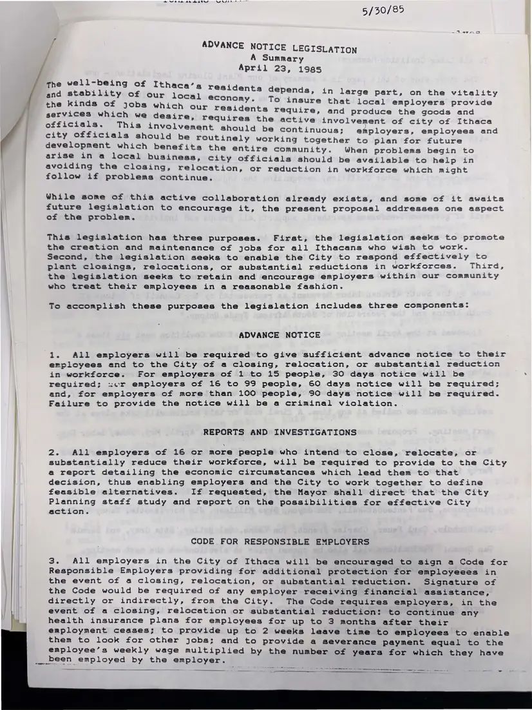

Proposal, 1 page
“Advance Notice Legislation: A Summary”
April 23, 1985
The coalition's proposed Ithaca ordinance on plant closings, in three parts: advance notice to workers and the city before a closing or major layoff, city reports and investigations of possible closings, and a voluntary code for responsible employers.
Download or cite this itemPages


(open zoom view)Read the page text (machine-read, mostly readable)
This text was generated automatically from the photograph and has not been corrected. The image is the authoritative record.
me we oem BR MATH WIA 5/30/85 ADVANCE NOTICE LEGISLATION A Summary April 23, 1985 the well-being of Ithaca’s yr and stability of our local e the kinds of jobs which our services which we desire, officials. This involveme city officials should be r esidents depends, in large part, on the vitality conomy. To insure that local employers provide residents require, and produce the goods and requires the active involvement of city of Ithaca nt should be continuous; employers, employees and outinely working together to plan for future development which benefits the entire community. When problems begin to arise in a local business, city officials should be available to help in avoiding the closing, relocation, or reduction in workforce which might follow if problems continue. While some of this active collaboration already exists, and some of it awaits future legislation to encourage it, the present proposal addresses one aspect ef the problem. This legislation has three purposes. First, the legislation seeks to promote the creation and maintenance of jobs for all Ithacans who wish to work. Second, the legislation seeks to enable the City to respond effectively to plant closings, relocations, or substantial reductions in workforces. Third, the legislation seeks to retain and encourage employers within our community who treat their employees in a reasonable fashion. To accomplish these purposes the legislation includes three components: ADVANCE NOTICE 1. All employers will be required to give sufficient advance notice to their employees and to the City of a closing, relocation, or substantial reduction in workforce. For employers of 1 to 15 people, 30 days notice will be . required; :.r employers of 16 to 99 people, 60 days notice will be required; and, for employers of more than 100 people, 90 days notice will be required. Failure to provide the notice will be a criminal violation. REPORTS AND INVESTIGATIONS 2. All employers of 16 or more people who intend to close, relocate, or substantially reduce their workforce, will be required to provide to the City a@ report detailing the economic circumstances which lead them to that decision, thus enabling employers and the City to work together to define feasible alternatives. If requested, the Mayor shall direct that the City Planning staff study and report on the possibilities for effective City action. CODE FOR RESPONSIBLE EMPLOYERS 3. All employers in the City of Ithaca will be encouraged to sign a Code for Responsible Employers providing for additional protection for employeees in the event of a closing, relocation, or substantial reduction. Signature of the Code would be required of any employer receiving financial assistance, directly or indirectly, from the City. The Code requires employers, in the event of a closing, relocation or substantial reduction: to continue any health insurance plans for employees for up to 3 months after their employment ceases; to provide up to 2 weeks leave time to employees to enable them to look for other jobs; and to provide a severance payment equal to the employee’s weekly wage multiplied by the number of years for which they have _been employed by the employer.
See something wrong, or recognize a person or event? Send a correction. If you hold rights in this item or think it should not be public, write to the same address.